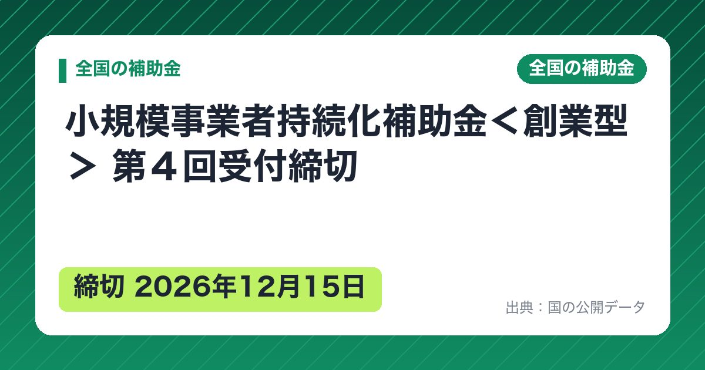

小規模事業者持続化補助金＜創業型＞ 第４回受付締切

締切 2026年12月15日｜上限 200万円
小規模事業者持続化補助金＜創業型＞ 第４回受付締切
概要
| 対象地域 | 全国 |
|---|---|
| 補助上限額 | 200万円 |
| 補助率 | ２／３ |
| 受付期間 | 2026年11月5日 〜 2026年12月15日 |
| 対象の従業員数 | 20名以下 |
| 利用目的 | 販路拡大・海外展開をしたい |
| 対象業種 | 漁業 / 建設業 / 製造業 / 電気・ガス・熱供給・水道業 / 情報通信業 / 複合サービス事業 / サービス業（他に分類されないもの） / 農業、林業 / 鉱業、採石業、砂利採取業 / 運輸業、郵便業 / 卸売業、小売業 / 金融業、保険業 / 不動産業、物品賃貸業 / 学術研究、専門・技術サービス業 / 宿泊業、飲食サービス業 / 生活関連サービス業、娯楽業 / 教育、学習支援業 / 医療、福祉 |
| 実施機関 | 小規模事業者持続化補助金＜創業型＞ |
公募の内容（原文の抜粋）
---------------------------------------------------------------------------------------
【申請方法について】
申請方法につきましては、下記リンクをクリックしご確認ください。
Ｊグランツ申請入力手引き
下部にある参照リンクも必ずご確認ください。
---------------------------------------------------------------------------------------
【電子申請システム「jGrants」の利用環境】
jGrantsの動作環境は以下のとおりです。下記のブラウザの最新バージョンをご利用ください。
● Windows ：Google Chrome, Microsoft Edge
● macOS ：Google Chrome, Safari
● iOS ：Safari
● Android ：Google Chrome
※上記以外のブラウザは、申請上のエラー等が生じますので利用しないでください。
※Microsoft Edge の「Internet Explorer モード」は申請上のエラー等が生じますので
利用しないでください。
※添付書類については、pdf 、zip 、png 、bmp 、jpg 、jpeg 、gif 、heic 、doc 、
docx 、xls 、xlsx で作成してください。
■目的・概要
創業後１年以内の小規模事業者および一定要件を満たす特定非営利活動法人
（以下「小規模事業者等」という。）を重点的に支援するため、
産業競争力強化法に基づく「認定市区町村」または「認定市区町村」と連携した
「認定連携創業支援等事業者」が実施した「特定創業支援等事業」による支援を受けた
小規模事業者が、今後複数年にわたり相次いで直面する制度変更等に対応するために
取り組む販路開拓等の取組の経費の一部を補助することにより、地域の雇用や
産業を支える小規模事業者等の生産性向上と持続的発展を図ることを目的とします。
本補助金事業は、自ら策定した持続的な経営に向けた経営計画に基づく
販路開拓等の取組や、その取組と併せて行う業務効率化（生産性向上）の取組を
支援するため、それに要する経費の一部を補助するものです。
■対象者
本補助金の補助対象者は、日本国内に所在する小規模事業者
（日本国内に居住する個人、又は日本国内に本店を有する法人）等であることとします。
■支援カテゴリー
販路開拓
■補助金上限額
・補助上限： ２００万円
※インボイス特例対象事業者は、上記金額に 50 万円の上乗せ
（詳細は 公募要領 Ｐ．８をご参照ください）
■問合せ先
小規模事業者持続化補助金＜創業型＞ 事務局
電話番号 03-6739-3890
Jグランツの操作に関する問い合わせ先
電話番号 03-6739-3890
問い合わせの対応時間：9:00～12:00、13:00～17:00（土日祝日、年末年始除く）
■備考
公募要件等、申請様式等の詳細については公募要領、応募時提出資料・様式集、
参考資料等を下記「参照URL」でご確認・ご利用ください。
■参照URL（申請を行う前に必ず下記URLを参照・熟読してから申請してください。）
小規模事業者持続化補助金トップ
交付規程はこちらをクリック
公募要領はこちらをクリック
ガイドブックはこちらをクリック
応募時提出資料・様式集はこちらをクリック
様式集ダウンロードはこちらをクリック
参考資料はこちらをクリック
よくあるご質問はこちらをクリック
申請前の準備
- GビズIDプライム（電子申請に必須・無料・発行まで1〜2週間かかることあり）：gbiz-id.go.jp
- 直近の決算書（個人事業主は確定申告書の控え）
- 事業計画（何に使い、どう売上・生産性が上がるか）
- 見積書（買う物・頼む工事の）
創業の補助金は、開業届・法人設立と、入金を受ける事業用の口座が先に必要になることが多いです。
広告準備に使えるサービス：
・会社設立を無料で始めるなら【弥生のかんたん会社設立】  （会社を作る手続きを無料でまとめて作れる）
（会社を作る手続きを無料でまとめて作れる）
・業界最安級の手数料で法人口座を即日開設！【ラクスルバンク】  （補助金の入金先になる法人口座をネットで開設）
（補助金の入金先になる法人口座をネットで開設）
全国のほかの補助金
- 【事前着手】令和8年度排出削減が困難な産業におけるエネルギー・製造プロセス転換支援事業（二次公募）（事業Ⅱ/紙パルプ・化学・セメント）（締切 2026年11月27日）
- 令和8年度排出削減が困難な産業におけるエネルギー・製造プロセス転換支援事業（二次公募）（事業Ⅱ/紙パルプ・化学・セメント）（締切 2026年11月27日）
- 令和７年度補正 ディマンドリスポンスの拡大に向けたIoT化推進事業（締切 2026年11月27日）
- 【令和８年度】二酸化炭素排出抑制対策事業費等補助金（地域再エネ水素ステーション保守点検等支援事業）（締切 2026年11月28日）
- 令和８年度二酸化炭素排出抑制対策事業費等補助金（運輸部門等の脱炭素化に向けた先進的システム社会実装促進事業のうち、農業機械の電動化促進事業）（締切 2026年11月30日）
- 【令和８年度】働き方改革推進支援助成金（締切 2026年11月30日）
- 令和8年度 資源循環分野の脱炭素化促進事業（締切 2026年11月30日）
- 産業車両等の脱炭素化促進事業のうち、空港における脱炭素化促進事業① 空港における再エネ活用型GPU等導入支援（二酸化炭素排出抑制対策事業費等補助金）（締切 2026年11月30日）